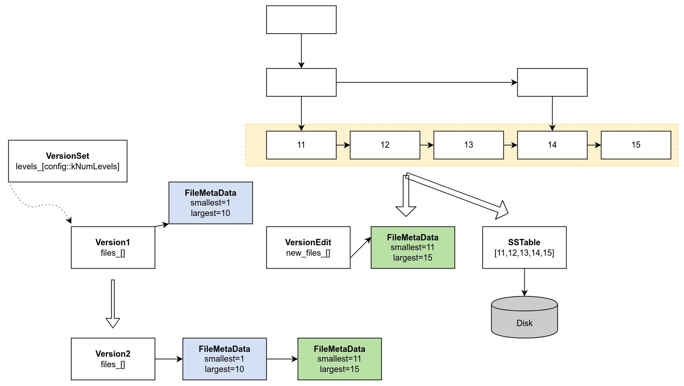
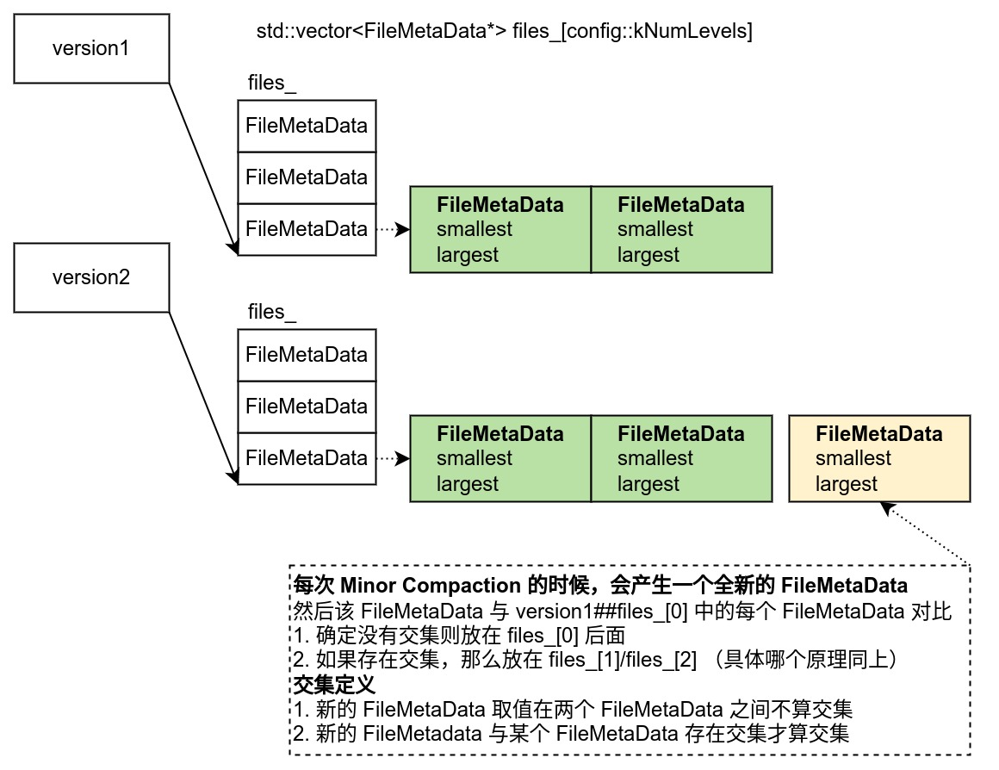

Ch11-LevelDB 之 Minor Compaction
June 30, 2022
Minor Compaction 流程
1. 触发时机 #
在 Put 的时候，会调用 MakeRoomForWrite(bool force) 来确定是否需要触发 Compaction，如果确定需要那么调用 MaybeScheduleCompaction() 将 Compaction 封装成任务放到 Schedule 的任务队列中。
1.1 MakeRoomForWrite(bool force) #
- 如果没有使用强制触发，且当前 Version 中的 files_ 数量大于 kL0_SlowdownWritesTrigger（默认 8），那么会延迟 1s 再尝试触发
- 如果 MemTable 小于 write_buffer_size（默认 4 MB）本次不会触发
- 如果上次的 Compaction 还没完成，那么本次不会触发
- 当前 Version 中 files_[0] 的数量大于 kL0_StopWritesTrigger（默认 12），那么本次不会触发
- 其他情况都会调用
MaybeScheduleCompaction()触发 Compaction
1.2 MaybeScheduleCompaction() #
- 如果已经有 Compaction 了，那么不会将 Compaction 放到 Schedule 任务队列中
- 如果后台已经报错了，那么不会将 Compaction 放到 Schedule 任务队列中
- 没有使用强制触发，而且 IMMutable MemTable 又为空，那么不会将 Compaction 放到 Schedule 任务队列中
- 其他情况则会将 Compaction 放到 Schedule 的任务队列中
2. 执行过程 #

Status DBImpl::WriteLevel0Table(MemTable* mem, VersionEdit* edit, Version* base) {
// 保存 SSTable 和 FileMetaData
Status s = BuildTable(dbname_, env_, options_, table_cache_, iter, &meta);
if (s.ok() && meta.file_size > 0) {
const Slice min_user_key = meta.smallest.user_key();
const Slice max_user_key = meta.largest.user_key();
if (base != nullptr) {
// 确定将本次 FileMetaData 保存到新 version 的哪个 level
level = base->PickLevelForMemTableOutput(min_user_key, max_user_key);
}
edit->AddFile(level, meta.number, meta.file_size, meta.smallest, meta.largest);
}
}
- 借助工具类 TableBuilder 将 SkipList 中 level[0] 中的数据保存到 sstable，同时生成元数据 FileMetaData；
- 将 version1##files_ 复制到 version2##files_ 中；
- 选择将本次产生的 FileMetaData 放到哪一层，具体判断逻辑见
Version::PickLevelForMemTableOutput()：- 如果本次 sstable 中的 key 的范围与 version1##files_[0] 范围有重叠，则数据落地到 version1##files_[0] 层 (防止新旧数据版本查询不一致)
- 如果跟 version1##files_[level+1] 层数据有重叠，则数据放弃向 level+1 层落地 (因为不能发生 merge 操作)，最终落地到 level 层
- 如果跟 version1##files_[2] 层重叠的所有 SST 总文件大小超过 20M(防止后期 merge 代价太大), 则数据放弃向 level+1 层落地，最终落地到 level 层
- level 不能超过 2
实际的实现中，第 2 步的过程还是比较复杂的。
VersionEdit##AddFile() -> VersionSet::LogAndApply() -> VersionSet::Builder##levels_[level]->push_back()
1. 会将 FileMetaData 先追加到 VersionEdit##new_files_；
2. 然后将 VersionEdit##new_files_ 复制到 VersionSet::Builder##levels_；
3. 最后再将 VersionSet::Builder##levels_ 复制到 Version##files_；
3. 其他事项 #
3.1 FileMetaData 移动图示 #

3.2 各种 level #
SkipList 中有 level，Version 中的 files_ 也有 level，不过它们之间并没有什么关系。
- SkipList 中的 level 是为了查询加速
- Version 中的 level 是为了减少后续 major compaction 时的 CPU/IO 开销。